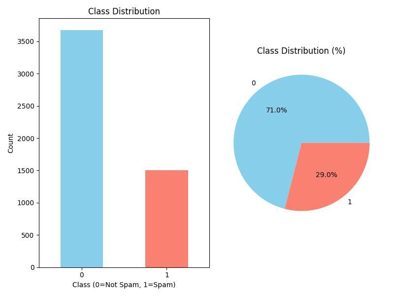
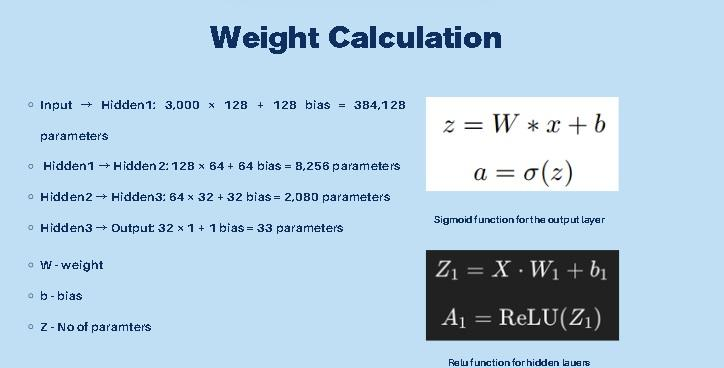
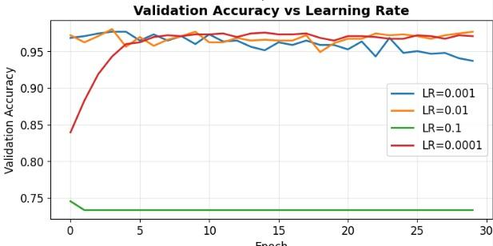

Spam Email Detection
Using Artificial Neural Networks
A lightweight deep learning model achieving 97.97% accuracy in classifying spam and legitimate emails. Designed for low-resource deployment with only 3 hidden neurons and dropout regularisation.

Model Architecture
optimized 3-layer structure with dropout

Training & Validation
performance metrics during training

Results Analysis
confusion matrix and accuracy metrics

Model Evaluation
performance visualization and insights
Project Overview
Email spam remains a persistent challenge in digital communication, with billions of unwanted messages sent daily. This project implements an efficient Artificial Neural Network (ANN) to automatically detect and classify spam emails with high accuracy.
By leveraging 3000 carefully selected input features extracted from email content, metadata, and linguistic patterns, the model learns to distinguish between legitimate emails and spam with remarkable precision.
Key Achievement: Developed a lightweight neural network achieving 97.97% test accuracy while maintaining computational efficiency — suitable for real-time email filtering on low-resource hardware.
Technologies Used
Key Features
Lightweight Architecture
Only 3 hidden neurons, ensuring fast inference and minimal computational requirements — suitable for edge and mobile deployment.
Dropout Regularisation
Prevents overfitting by randomly disabling neurons during training, resulting in strong generalization on unseen email data.
Adam Optimizer
Adaptive learning rate optimization for efficient and stable model convergence with faster training and reliable results.
Early Stopping
Automatically halts training when validation performance plateaus, preventing overfitting while maximizing classification performance.
Key Metrics
Technical Implementation
Feature Engineering
The model processes 3000 input features extracted from email data, including word frequencies, character patterns, special character counts, capitalization ratios, and metadata indicators. Feature extraction combines traditional text analysis techniques with domain-specific knowledge about spam characteristics.
Model Architecture
The neural network employs a streamlined architecture with an input layer accepting 3000 features, hidden layers with carefully tuned neuron counts, and dropout layers (0.2–0.5 rate) to prevent overfitting. The output layer uses sigmoid activation for binary classification.
Training Strategy
Training utilises the Adam optimizer which adapts learning rates for each parameter, leading to faster convergence. Early stopping monitors validation loss, automatically terminating training when improvement stagnates. This prevents overfitting while maximising performance.
Data Preprocessing
Email text undergoes tokenization, stemming, and removal of stop words. Numerical features are normalized using standardization to ensure all inputs contribute equally to model learning. The dataset is split into training, validation, and test sets with stratified sampling.
Challenges & Solutions
High-Dimensional Input Space: Managing 3000 features posed computational challenges. Implemented efficient matrix operations with TensorFlow and utilised batch processing to handle large feature vectors effectively.
Preventing Overfitting: With a small network and large feature space, overfitting risk was significant. Addressed through dropout regularization and early stopping, which together maintained generalization capability.
Class Imbalance: Spam and legitimate emails often have imbalanced distribution. Applied class weighting and stratified sampling to ensure the model learns both classes effectively.
Applications & Impact
- Email service providers can integrate the model for automatic spam filtering at scale
- Corporate email systems benefit from reduced spam reaching employee inboxes
- Lightweight design enables deployment on edge devices and mobile applications
- Serves as a foundation for more complex content filtering systems
- Educational tool for understanding deep learning in text classification tasks
Future Enhancements
- Incorporating transformer-based architectures (BERT, GPT) for contextual understanding
- Implementing online learning to adapt to evolving spam patterns in real time
- Adding multi-language support for international email filtering
- Integrating image and attachment analysis for multimedia spam detection
- Developing explainability features to show why emails are classified as spam
- Creating a web interface for real-time demonstration and testing